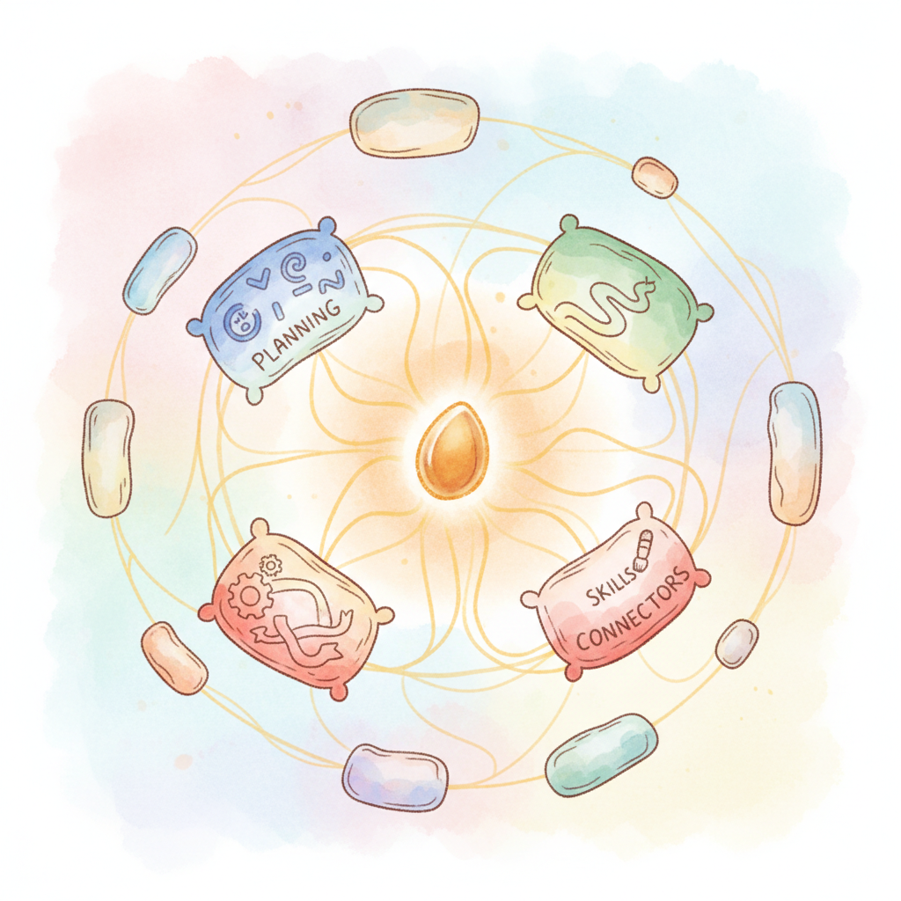

Semantic Kernel: Enterprise AI Orchestration is Microsoft's open-source SDK for integrating LLMs into applications, available in C#, Python, and Java. Its design centers on a kernel object that orchestrates plugins (collections of functions), prompt templates (semantic functions), and native code (native functions). The kernel manages service connectors for multiple providers (Azure OpenAI, OpenAI, HuggingFace, local models), memory stores for embedding-based recall, and planners that automatically decompose goals into multi-step execution plans.
What distinguishes Semantic Kernel: Enterprise AI Orchestration from Python-first frameworks like LangChain is its deep integration with the Microsoft ecosystem. It connects natively to Azure OpenAI Service, Microsoft Graph, Azure Cognitive Search, and Azure AI Studio. The SDK follows enterprise software patterns including dependency injection, structured logging, and role-based access control. Planner strategies (sequential, stepwise, Handlebars) let the LLM itself decide how to combine available functions to accomplish a user request.
This appendix is essential for teams building AI features within .NET or Java applications, organizations committed to the Azure stack, and developers who prefer strongly typed, enterprise-grade orchestration over scripting-style frameworks.
Semantic Kernel: Enterprise AI Orchestration's plugin and planner architecture implements the agent patterns described in Chapter 22 (AI Agents) and Chapter 23 (Tool Use). The API connector layer wraps the provider interfaces covered in Chapter 10 (LLM APIs). For a comparison of Semantic Kernel: Enterprise AI Orchestration against Python-centric alternatives, see Appendix V (Tooling Ecosystem).
Read Chapter 10 (LLM APIs) to understand the chat completion and embedding interfaces that Semantic Kernel: Enterprise AI Orchestration wraps. Chapter 22 (AI Agents) covers the reasoning and tool-calling concepts behind planners and function calling. Familiarity with either Python or C# is needed; the sections show examples in both languages.
Reach for Semantic Kernel: Enterprise AI Orchestration when you are building within the Microsoft/.NET ecosystem, when you need first-class Azure OpenAI integration with enterprise authentication (Entra ID/managed identity), or when your team prefers C# or Java over Python. It is a strong fit for enterprise copilot features, internal productivity tools, and applications that must integrate with Microsoft 365 services. If you are working in a Python-only environment and do not need Azure-specific features, Appendix L (LangChain) or Appendix O (LlamaIndex) may offer a larger community and more integrations.